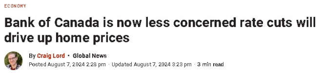

加拿大央行管理委员会最新会议纪要显示，央行现在对于降息时房价会飙升的担忧有所减轻。同时，市场预测央行将会加快降息步伐，房贷利率趋于向下。

在7月24日的会议上，加拿大央行进行了连续第二次降息，利率下调了四分之一个百分点。本周三公布的会议纪要公开了央行高层对通胀前景和加拿大经济整体情况的讨论，包括移民速度、工资压力和房地产市场。
此前的讨论表明，管理委员会在接近降息率时一直密切关注住房活动，担心突然降低借贷成本可能会推高房价，并影响迄今为止在抑制通胀方面取得的进展。
但是最新的纪要显示，这些担忧有所减轻。
管理委员会承认，抵押贷款利率下降或人口增长超出预期，可能会推动住房市场需求上升，而建房延误可能会限制供应的增长。
“尽管如此，管理委员会认为，随着政策利率的下调，积压的需求导致房价突然上涨的担忧有所减弱，”纪要中写道。
管理委员会还指出，如果住房可负担性问题继续将租房者排除在购房市场之外，加拿大人可能面临更多的“租金上涨压力”。
至于借贷成本，管理委员会表示，如果通胀继续回归2%的目标，“进一步下调政策利率将是适当的。”
预测加拿大央行加速降息
加拿大央行7月降息之后，许多预测人士预计，基准利率在今年年底前降至约4%的水平，而目前为4.5%。
但现在，一些市场观察人士预计加拿大央行在未来几个月内可能加快降息步伐，这将进一步压低债券收益率，并直接影响市场上的浮动抵押贷款利率。
BMO加拿大利率和宏观策略主任Benjamin Reitzes指出，截至周二，市场预计加拿大央行今年将额外降息75个基点，到2025年中期再降75个基点。
BMO现预计在2024年剩余的每次会议上，政策利率将每次下降25个基点，年底将降至3.75%。CIBC的预测也与此一致。
加拿大即将于本周五发布就业报告，下周将发布最新的通胀数据。Reitzes表示，央行进一步降息的主要风险是在解决通胀方面的进展受阻。
房贷利率继续下调
与此同时，加拿大人正在为秋季房市做准备，专家表示，现有房主在抵押贷款续约时，可能会因近期市场波动而看到利率下降。
在美国疲弱的就业数据引发全球抛售后，股市在周二基本恢复。然而，这种股市波动也影响了债券市场，这是固定抵押贷款利率的关键因素。
加拿大政府五年期债券收益率本周短暂跌破3%。贷款机构利用该收益率来评估其提供的五年期固定利率抵押贷款。
比较网站Ratehub的抵押贷款专家Penelope Graham表示，债券市场通常是股市波动时投资者的“避风港”。交易者在大量购买债券时推高价格并压低收益率。
由于贷款机构参考债券市场设定其提供的利率，“这确实有利于固定抵押贷款利率的额外折扣。”
Graham指出，固定利率在最近几周已经开始下降，这与债券市场的缓和有关，而这种缓和是基于对央行降息的预期。随着央行连续两次降息并保持更多降息的可能性，自5月以来，债券收益率在预期借贷成本降低的情况下总体呈下降趋势。
Graham表示，目前在Ratehub上，五年期固定利率保险抵押贷款的最低利率为4.29%，这是自去年春季以来房市短暂活跃期以来的最低水平。
“如果收益率继续下降，我们可能会看到更多的折扣，”她说。
不同类型的抵押贷款差异
温哥华Pinsky Mortgages的抵押贷款专家Eitan Pinsky表示，当债券收益率走低时，首先受到影响的是有保险的抵押贷款。如果购买低于100万元的房屋时首付少于20%，可以获得有保险的抵押贷款。
他指出，其他固定利率的抵押贷款可能需要两周到两个月的时间才会对债券市场的变化做出反应。
Ratesdotca的抵押贷款和房地产专家Victor Tran也在一份声明中表示，主要贷款机构可能会等到债券收益率持续走低一段时间后才会调整他们的公布利率。
“目前，市场过于动荡，无法有那种前瞻性，”他说。单一贷款机构已经将利率调整了5到10个基点。
Tran和Pinsky都提到，在当前竞争激烈的抵押贷款业务市场中，贷款机构正在提供特别利率。Pinsky表示，在他的职业生涯中，从未见过如此激烈的竞争。
无论是今秋寻找新的抵押贷款还是要续签，他建议货比三家，并回到主要贷款机构寻求更低的利率，而不是直接接受最初的报价，因为那可能不是最优惠的利率。
Pinsky表示，目前“绝大多数”客户选择三年期的固定利率抵押贷款，这是假设三年后续签时利率会降低。
但他也建议一些加拿大人考虑当前的浮动利率抵押贷款，因为浮动利率的合同利率可以随着央行降息而下降。